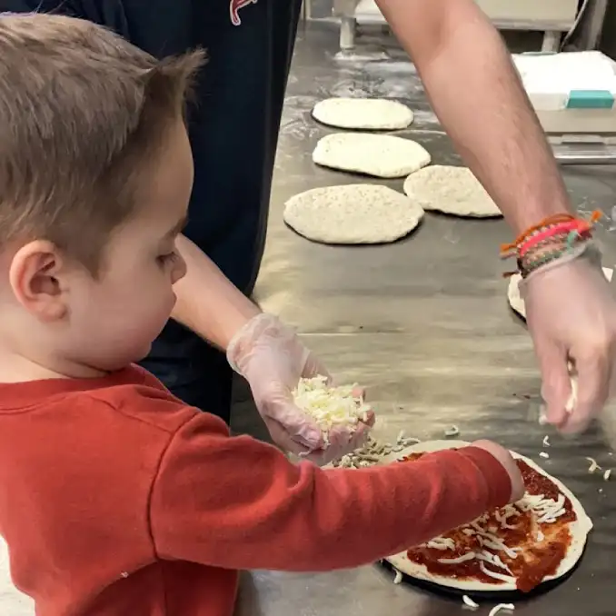
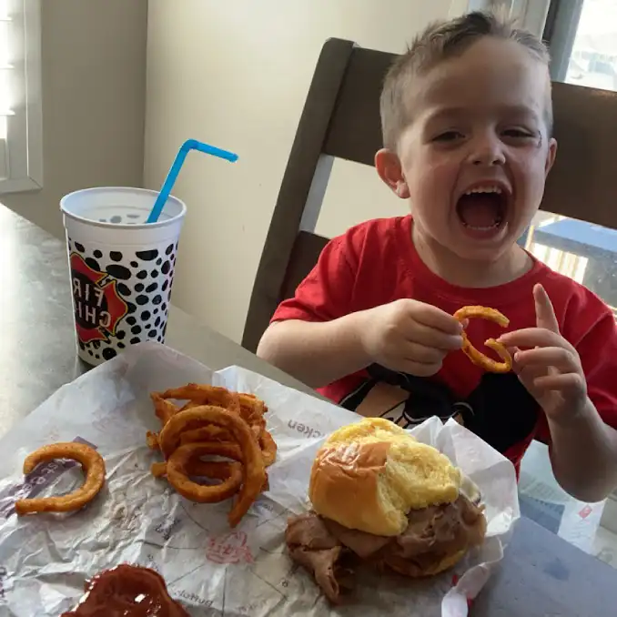
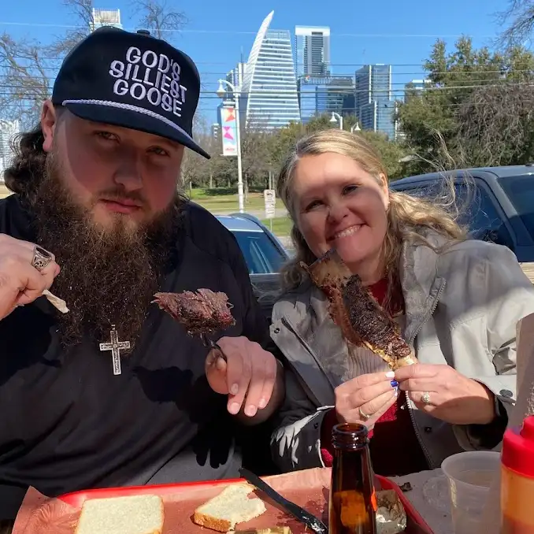
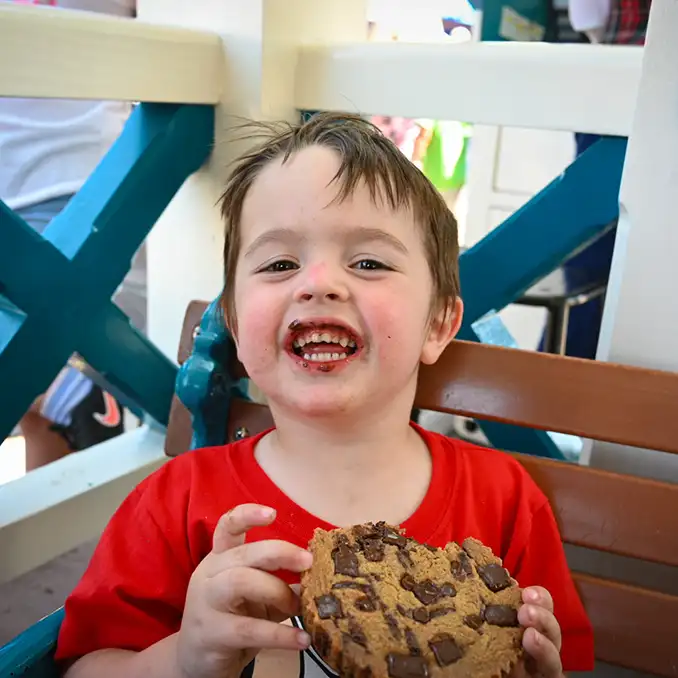

Pizza Places
Pizza places are all about delicious, cheesy goodness. Imagine “Pizza Paradise,” where each pizza is crafted with fresh, locally sourced ingredients and a variety of unique toppings. Another fictional spot, “Slice of Heaven,” might focus on gourmet pizzas with artisanal crusts and specialty sauces. Pizza restaurants often emphasize creativity, quality, and a fun, casual dining experience.

Burger Joints
Burger joints are all about juicy patties, fresh toppings, and creative combinations. Imagine “Burger Haven,” where each burger is crafted with locally sourced ingredients and unique sauces. Another fictional spot, “Grill Masters,” might focus on gourmet burgers with artisanal buns and specialty cheeses. Burger restaurants often emphasize customization, quality, and a fun, casual dining experience.

Taco Spots
Taco spots bring vibrant flavors and cultural flair to the table. “Taco Nova” might experiment with fusion tacos, combining global cuisines into bold new creations like Korean BBQ tacos or breakfast-inspired options. Meanwhile, “Street Corner Tacos” could focus on authenticity, serving simple, flavorful tacos with fresh ingredients and handmade tortillas. Taco restaurants often emphasize freshness, variety, and bold seasoning, making them a favorite for quick, satisfying meals full of personality.
Barbecue Places
Barbecue spots are all about slow cooking, smoky flavors, and rich traditions. Imagine “Smokestack Hollow,” where meats are cooked low and slow over hickory wood for hours, filling the air with mouthwatering aromas. Another fictional eatery, “Backyard Legends BBQ,” might emphasize a laid-back atmosphere with picnic tables and secret family rubs. BBQ restaurants often celebrate regional styles, from sweet and tangy sauces to dry rubs, creating a comforting and hearty dining experience.

Dessert Spots
Dessert shops are where creativity and sweetness collide. A place like “Sugar Rush Emporium” could offer colorful cakes, towering sundaes, and desserts that look almost too pretty to eat. On the other hand, “Midnight Bakery” might specialize in warm cookies, rich brownies, and late-night treats for night owls. Dessert eateries often focus on presentation and indulgence, turning simple sweets into memorable experiences that feel special and a little magical.
